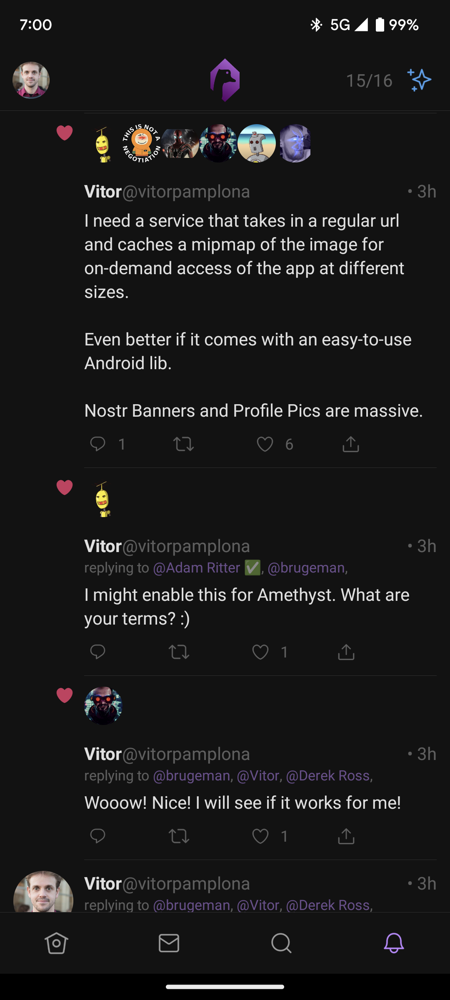
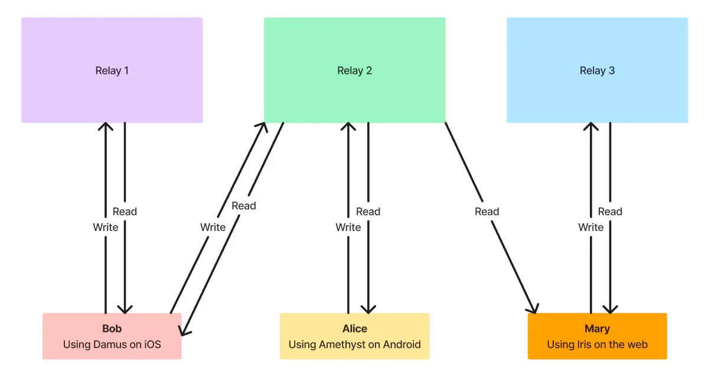

Find Your Nostr Application
Getting Started with Nostr
Apps that use the Nostr protocol are cool and safe things to do, where you can share views and opinions with people from any corner of the world.Begin your adventure with Nostr by learning some of the commonalities of the Nostr family of apps and how they empower you to interact on the decentralized platform.
Protocol vs Client
Nostr is a protocol for communication, accessed through clients. Clients can be web-based, or native to desktop and mobile, acting as the interface for you to fetch and publish data to the network.
Signing Events
Every action on Nostr, known as an event, requires your signature. This signature is a mathematical proof that you are the author of your messages.
Choosing a Client
Choose a client that resonates with your preferences, whether it's for web, desktop, or mobile. For web clients, consider using a secure browser extension to manage your keys.
Downloading APP
It is important to download the right app before you start exploring the decentered world. It is recommended to use official app stores such as the APP Store, Play Store, Microsoft Store, etc. to download them. If you want to use online web pages, we recommend using Chrome or Firefox to access them. Please note that since decentralized programs are not regulated, do not give out any personal information.
Keep Your Keys
Your journey on Nostr starts by creating a public/private key pair. Think of your public key as your unique username (prefixed with npub1) and your private key as your secure password (prefixed with nsec1). Remember, your private key is irreplaceable; store it safely.
Finding Friends to Follow
Expand your network by following friends or prominent Nostr users. Use tools like nostr.directory to connect with Twitter users on Nostr.
Using Multiple Clients
With your key pair, you can log into any Nostr client and retain access to your account, messages, and network.
Ready to dive in? Select a recommended client and start exploring the Nostr network today.
Setting Up a Nostr Relay Server
Contributing to the Nostr network by setting up your own relay server is a valuable way to support the decentralized ecosystem. Here's a summary of the process:
Step 1: Server Preparation
Start with a fresh VPS running Ubuntu 22.04. Ensure that it's updated and secured.
sudo apt update && sudo apt upgrade
Step 2: Install Dependencies
Install necessary packages like curl, build-essential, and Rust.
sudo apt install curl build-essential
curl --proto '=https' --tlsv1.2 -sSf https://sh.rustup.rs |
sh
Step 3: Relay Setup
Clone the nostr-rs-relay repository and build the relay using cargo, Rust's package manager.
git clone https://github.com/fiatjaf/nostr-rs-relay.git
cd nostr-rs-relay && cargo build --release
Step 4: Configuring a Reverse Proxy
Set up a Caddy server to act as a reverse proxy. Configure it to forward requests to your relay server.
Step 5: Service Management
Create a systemd service for your Nostr relay. This ensures it starts on boot and restarts on failure.
Step 6: Monitoring
Keep an eye on your relay server using tools like journalctl and tail to check logs and ensure it's functioning properly.
journalctl -u your-service-name
For detailed commands and further explanations, refer to the complete guide on Nutcroft.